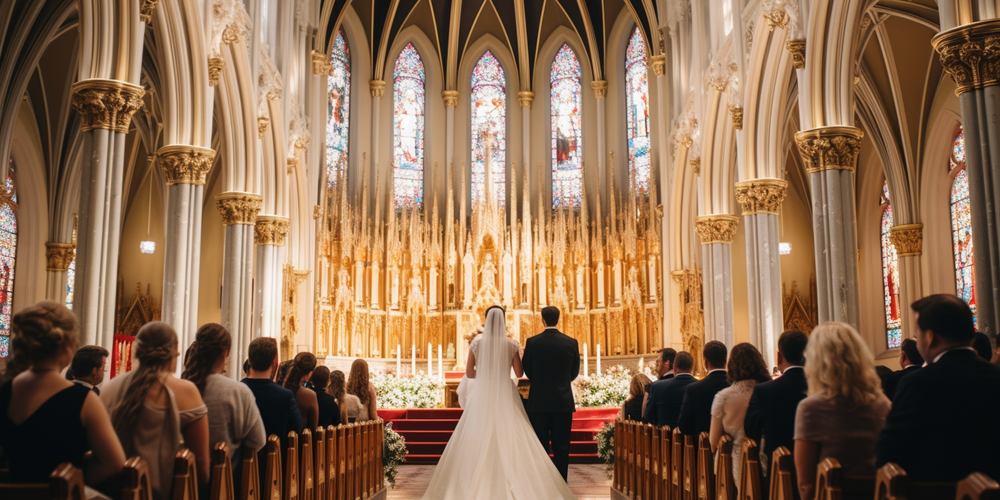

.png)
Celebrate the Sacrament of Holy Matrimony
Marriage is a sacred covenant between a man and a woman, blessed by the Church, in which they become one flesh in Christ. This sacrament is a reflection of God's love and commitment to His people, and it is a vocation to be lived in fidelity, love, and service to one another and to the community.
Steps to Prepare for Your Wedding
- Contact the parish office to schedule your wedding date and discuss the requirements.
- Attend pre-marital counseling sessions offered by the Church.
- Ensure you have a valid marriage license from the government.
- Complete the necessary paperwork and forms from the parish office.
Symbols of Marriage
The celebration of marriage is filled with powerful symbols that reflect the unity and love between the couple:
- Rings: A symbol of eternal love and fidelity.
- Unity Candle: Signifies the couple's new life as one in Christ.
- Veil and Cord: Represents the couple's unity and commitment to each other.
- Bible: Reflects the couple's shared faith and foundation in God's Word.
At St. Cyprian Kawanda Parish, we are honored to walk with you as you prepare to celebrate this sacrament. Please contact the parish office for more information and to start your wedding preparations.
Get in Touch
Contact Info
St. Cyprian Kawanda Catholic Church
Email: cypriankawanda@gmail.com
Phone: 0779699852